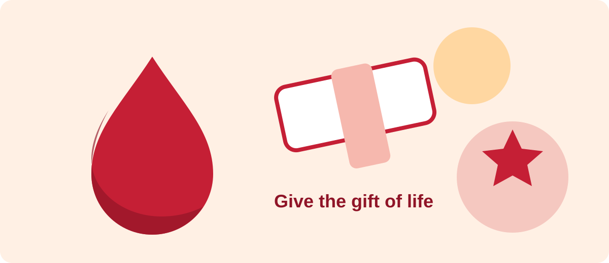

Donate Blood
Learn about donor eligibility, preparation and the steps involved in a safe blood donation.
Learn More
Learn about safe blood donation, visit a donor centre, and support SANBS through volunteering, partnerships and community blood drives.
Learn About Donation Get InvolvedEvery donation supports patients who need blood during surgery, medical treatment, emergencies and childbirth. Choose the way that best suits your interests.
Learn about donor eligibility, preparation and the steps involved in a safe blood donation.
Learn MoreUse the contact page to review example donor-centre locations and plan where to get assistance.
View LocationsSupport the SANBS mission by enquiring about volunteering, sponsorship, partnerships or a community blood drive.
Make an EnquiryBlood donation helps patients receiving treatment for cancer, surgery, trauma and chronic illness. Check your eligibility and book a donation visit.
Volunteers can support awareness campaigns, donor recruitment, community outreach and events that help SANBS reach more communities.
Schools, workplaces and community groups can host a blood drive to make blood donation accessible and encourage regular donors.
Each donation can help patients in surgery, trauma care, cancer treatment and maternity emergencies.
Healthy blood stock supports hospitals and clinics with reliable, life-saving resources.
Community drives and volunteer support make it easier for more people to give and care.